1Fiche d’identité
Jacques-Gabriel Duchastel naît à Reims, paroisse Saint-Étienne, en 1758, fils de Jean-Baptiste Duchastel de Montflambert et de Louise-Nicolle Cadot. Officier dans le régiment Colonel-Général des Dragons, puis au bataillon de garnison de Bourgogne, il épouse en 1781 Philippine-Élisabeth Durand de Courmont, s’installe à Séry près de Rethel et meurt à Reims à 33 ans, le 25 mars 1792, laissant trois enfants. C’est sur son brevet royal de 1788 que le nom « Duchastel de Montrouge » apparaît pour la première fois.
- Naissance
- 14 avril 1758 (selon la fiche), Reims, Saint-Étienne (Marne)
Voir « Points à vérifier » - Baptême
- Reims, Saint-Étienne, 1758 — acte transcrit ci-dessous
- Décès
- 25 mars 1792, à 33 ans, à Reims
Inhumé le 26 mars au cimetière de Saint-Denis - Parents
- Jean-Baptiste Duchastel de Montflambert (1723-1809)
Louise-Nicolle Cadot (1736-1776) - Profession
- Officier au régiment Colonel-Général des Dragons (5e régiment de dragons), puis au bataillon de garnison de Bourgogne
- Mariage
- 9 janvier 1781, Rethel (Ardennes), avec Philippine-Élisabeth Durand de Courmont (1763-1842)
- Résidences
- Reims ; Rethel ; Séry (près de Rethel)
- Enfants
- Jeanne-Élisabeth (1781), Alexandre-Louis-François (1784), Jean-Jacques (1786)
2Naissance, famille et fratrie
Son père, Jean-Baptiste Duchastel de Montflambert, est écuyer, conseiller secrétaire du Roi, maison couronne de France et de ses finances. Sa mère, Louise-Nicolle Cadot, meurt en 1776, quand il a une vingtaine d’années. Il est le dernier d’une fratrie de trois garçons :
| Nom | Dates | Notes |
|---|---|---|
| Jacques-Jean-Baptiste Duchastel de Montflambert (Duchastel-Berthelin) | 6 juin 1756 – 21 février 1830 | Marié à Élisabeth Berthelin ; 2 unions. Mort sans descendance : c’est son neveu Alexandre-Louis-François qui lui succédera. |
| Jean-Baptiste-Philippe Duchastel de Montflambert | 13 mars 1757 – 19 mars 1757 | Mort une semaine après sa naissance. |
| Jacques-Gabriel Duchastel de Montrouge | 1758 – 25 mars 1792 | Marié à Philippine-Élisabeth Durand de Courmont ; 3 enfants. |
L’acte de baptême (Reims, Saint-Étienne, 1758)
Le registre est conservé aux Archives départementales de la Marne. En marge : « Baptême de Mr de Montflambert ».
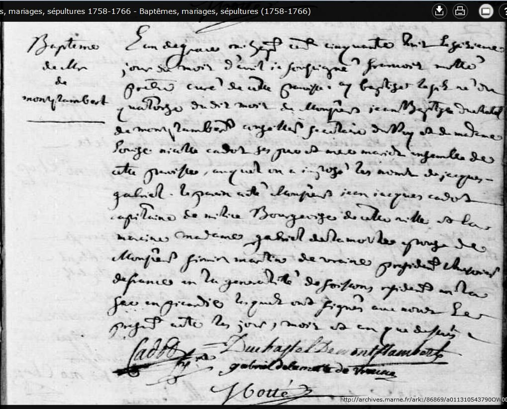
Transcription (orthographe conservée, ponctuation ajoutée). « L’an de grace mil sept cent cinquante huit, le quatorzieme jour du mois d’aoust, je soussigné, François Motté, prestre curé de cette paroisse, ay baptisé le fils né du quatorze du dit mois de Monsieur Jean Baptiste Duchastel de Montflambert, conseiller secretaire du Roy, et de madame Louise Nicolle Cadot ses pere et mere, mariés ensemble, de cette paroisse, auquel on a imposé les noms de Jacques-Gabriel. Le parrain a esté Monsieur Jean Jacques Cadot, capitaine de milice bourgeoise de cette ville, et la marraine madame Gabriel de la Motte, espouse de Monsieur Firmin Martin de Vraine, président trésorier de France en la généralité de Soissons, résidant en la ville de Fère en Picardie, lesquels ont signé avec nous le présent acte les jour, mois et an que dessus. »
Le parrain, Jean-Jacques Cadot, est son oncle maternel ; la marraine, de La Motte de Vraine, résidait à La Fère en Picardie. Le curé, François Motté, a signé l’acte. Les notes de travail se demandent si ce curé a un lien avec François de La Motte (1722-1789), beau-frère d’Élisabeth Bourgogne et donc oncle de sa future épouse : la question reste ouverte.
3Un officier du roi
Jacques-Gabriel sert d’abord comme lieutenant au régiment Colonel-Général des Dragons, le premier des régiments de dragons de France (devenu 5e régiment de dragons le 1er janvier 1791).
15 avril 1788 — le nom « Duchastel de Montrouge » apparaît. Par lettre signée de Louis XVI à Versailles et contresignée du comte de Brienne, secrétaire d’État de la Guerre, Gabriel Duchastel de Montrouge, ci-devant lieutenant au régiment du Colonel-Général des Dragons, est nommé lieutenant en premier de la compagnie de fusiliers de Micault, vacante dans le bataillon de garnison de Bourgogne par la mort du sieur de La Coudre. Premier document connu où figure le nom de Montrouge.

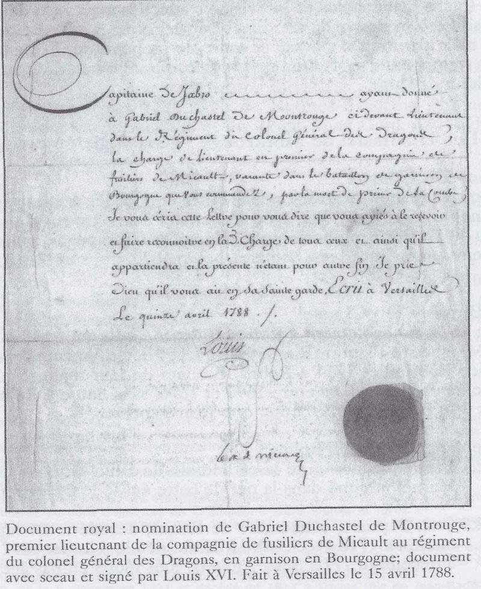

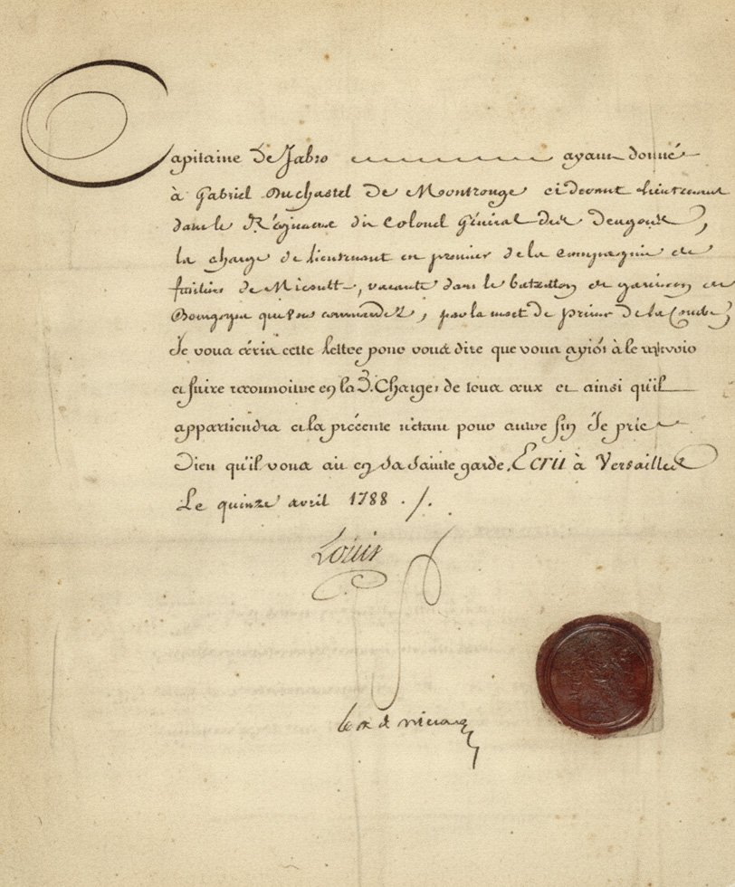
Transcription de la lettre du roi. « Capitaine de Fabro, ayant donné à Gabriel Duchastel de Montrouge, ci-devant lieutenant dans le Régiment du Colonel Général des Dragons, la charge de lieutenant en premier de la compagnie de fusiliers de Micoult, vacante dans le bataillon de garnison de Bourgogne que vous commandez, par la mort du sieur de la Coudre ; je vous écris cette lettre pour vous dire que vous ayez à le recevoir et faire reconnoître en lad[ite] charge de tous ceux et ainsi qu’il appartiendra. La présente n’étant pour autre fin, je prie Dieu qu’il vous ait en Sa sainte garde. Écrit à Versailles le quinze avril 1788. Louis. [Contreseing :] le c. de Brienne. »
Les étapes connues
- Avant 1788 · Dragons — lieutenant au régiment Colonel-Général des Dragons, dont la compagnie était alors en garnison en Bourgogne.
- 15 avril 1788 · Bourgogne — brevet de lieutenant en premier, compagnie de fusiliers de Micault, bataillon de garnison de Bourgogne.
- 1790-1792 · 59e régiment d’infanterie (ci-devant Bourgogne) — rattachement au régiment dont les bataillons tiennent garnison dans le Midi : 1er bataillon à Draguignan (1er juillet 1790) puis Alais et Sommières (1er janvier 1792) ; 2e bataillon à Uzès (1790) puis Carpentras, avec départ prévu en mars 1792 pour Montpellier.
- 25 mars 1792 · Reims — décès, un mois avant la déclaration de guerre du 20 avril 1792.
Le contexte : les dragons et le régiment de Bourgogne
Les dragons sont des fantassins à cheval : ils se déplacent à cheval mais combattent surtout à pied, au fusil ou au sabre. Un régiment compte quatre escadrons de deux compagnies chacun, soit 450 à 500 hommes en temps de paix. Une compagnie est encadrée par un capitaine (propriétaire de la charge), un lieutenant (le grade de Jacques-Gabriel), un sous-lieutenant, un maréchal des logis en chef, deux maréchaux des logis, quatre brigadiers et un trompette.
De 1790 à 1792, le régiment de Bourgogne est envoyé dans le Midi, en pleine tension religieuse et politique (Constitution civile du clergé, affaire d’Avignon et du Comtat Venaissin), non pour combattre l’étranger mais pour maintenir l’ordre. En mars 1792, il entre à Avignon en chantant le « Ça ira ! » face au régiment de La Marck.
Ces éléments décrivent les unités où il a servi ; ils ne disent pas ce que Jacques-Gabriel y a fait personnellement. Aucun état de service détaillé n’a encore été retrouvé.
Les uniformes qu’il a pu porter
Sous Louis XVI, les dragons du Colonel-Général portent un habit de drap vert foncé aux parements, revers et doublures roses, des boutons dorés pour les officiers, des épaulettes dorées et un casque de cuivre jaune à bandeau de peau de panthère, crin noir et plumet blanc. Dans l’infanterie de 1791, l’habit devient blanc avec un bicorne noir à cocarde tricolore.
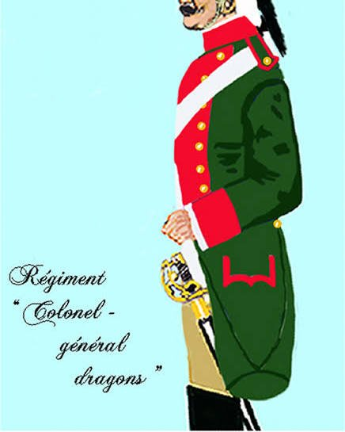
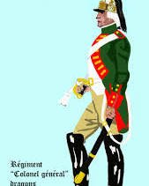
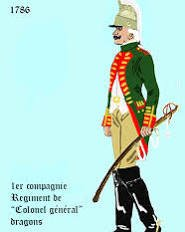
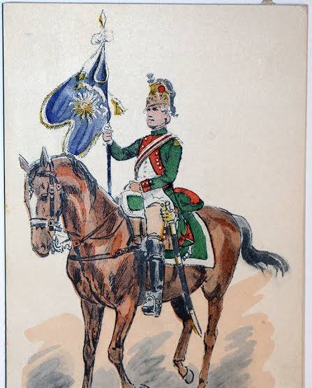
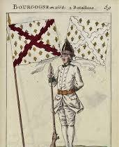
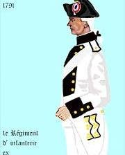
Illustrations de référence trouvées en ligne (notamment sur Picryl) : ce sont des représentations des uniformes du régiment, non des portraits de Jacques-Gabriel.
4Mariage à Rethel et vie à Séry
Le 9 janvier 1781, à Rethel, Jacques-Gabriel, 22 ans, épouse Philippine-Élisabeth Durand de Courmont, 17 ans. Le registre de Rethel, cité dans l’Essai sur Rethel de J.-B. Caruel, l’inscrit ainsi :
« 1781. M. Jacques-Gabriel Duchatel de Montrouge, officier du régiment colonel général de dragons, fils de Jean-Baptiste Duchatel de Montflambert, écuyer, et de défunte Louise-Nicole Cadot, avec Élisabeth-Philippine Durand de Courtmont, fille de défunt Jean-Baptiste Durand de Courtmont, ancien conseiller du roi, lieutenant particulier du bailliage et maire royal de Rethel, et de dame Élisabeth Bourgogne, célébré par M. Pillas, curé-doyen, en présence dudit Montflambert, des parents de l’épouse et de nombreux amis. »
Séry, près de Rethel
Le couple s’installe à Séry, à environ 8 km au nord-ouest de Rethel (les monts de Séry se trouvent à deux lieues de Rethel). Leurs trois enfants naissent à Rethel. Les notes de la succession décrivent « une belle maison avec grande cour, jardin, vigne, etc. », avec 114 arpents de terre, 32 de prés et 26 arpents de bois.

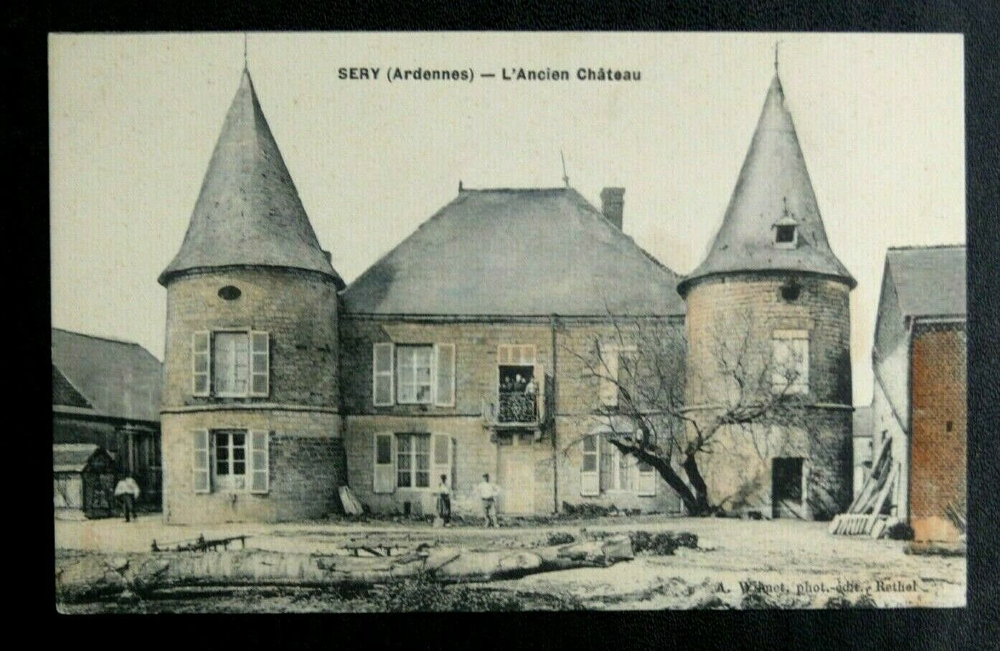

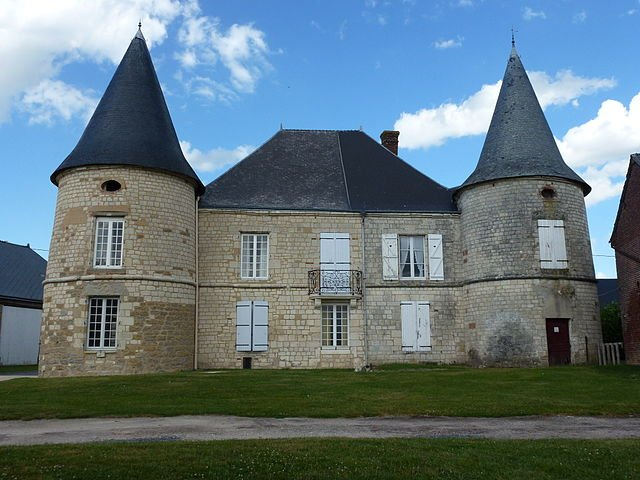

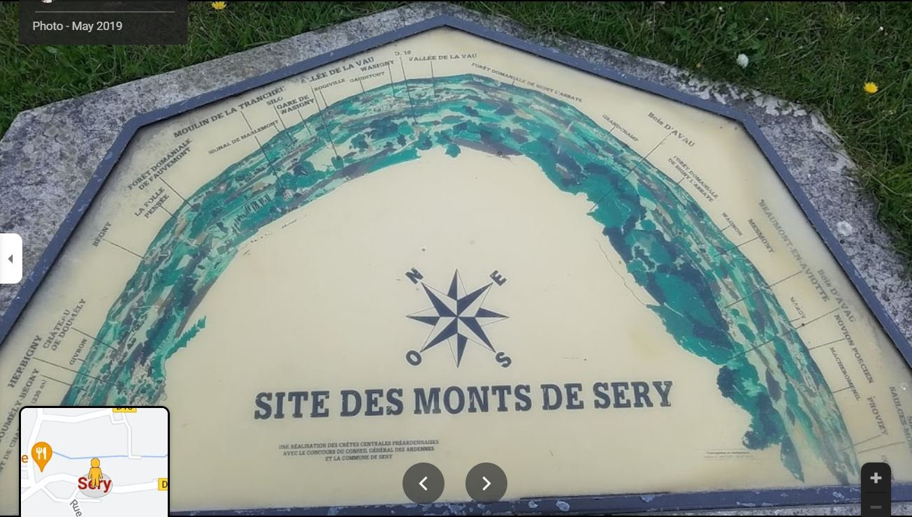
Rien n’établit encore que ce château ait appartenu à Jacques-Gabriel. Les annonces du baron de Saint-Loup (1778 et 1783) mettent en vente la seigneurie de Séry : la question de savoir si le couple l’a acquise reste ouverte. Le domaine du Mont-Rouge à Rogécourt, à l’ouest de Reims, ne semble avoir aucun lien avec la famille.
Une vente en 1791
Le 12 mai 1791, devant Me Daumont, notaire à Vieil-Saint-Remy, Jacques-Gabriel Duchastel de Montrouge et Philippine-Élisabeth Durand de Courmont, demeurant à Séry, vendent un corps de ferme à Bricuille-sur-Bar (Briculle-sur-Bar) pour 16 000 livres et autres charges. L’annonce paraît dans le Journal de Champagne.
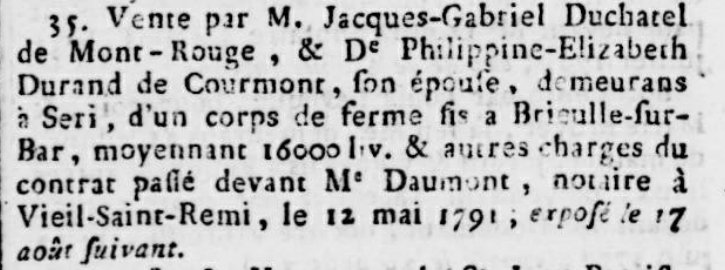
5Mort à Reims (25 mars 1792)
Jacques-Gabriel meurt à Reims à 33 ans. L’acte d’inhumation, aux Archives départementales de la Marne (Reims, église métropolitaine Notre-Dame, baptêmes, mariages, sépultures 1791-1792, 2 E 534/186, page 103), le nomme « Jacques Gabriel Duchatel, époux de Philippine Elisabeth Durand ».
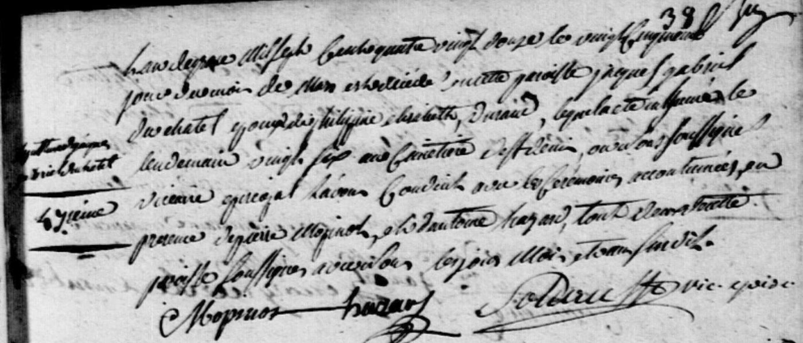
Transcription. « L’an de grâce mille sept cent quatre vingt douze le vingt cinquième jour du mois de mars est décédé en cette paroisse Jacques Gabriel Duchatel, époux de Philippine Elisabeth Durand, lequel a été inhumé le lendemain vingt six au cimetière de St Denis où avons soussigné vicaire épiscopal l’avons conduit avec les cérémonies accoutumées en présence de Pierre Mopinot et Antoine Hazard, tous deux de cette paroisse soussignés avec nous les jour, mois et an susdits. »
Aucune source ne parle de blessure de guerre : la France n’a déclaré la guerre à l’Autriche que le 20 avril 1792, près d’un mois plus tard. Il est mort très probablement de maladie, mais la cause exacte n’est pas documentée.
La vente de la succession (21 mai 1792)
Deux mois après sa mort, la veuve met en vente les biens de la succession à Séry : « une belle maison avec grande cour, jardin, vigne, etc… 114 arpents de terre, 32 de prés, 26 arpents de bois. S’adresser à Mme de Montrouge à Seri. »
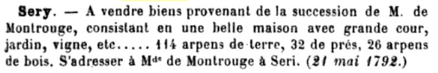
6Famille et descendance
Jacques-Gabriel et Philippine-Élisabeth ont trois enfants, tous nés à Rethel. Le père meurt alors que l’aîné a 10 ans, et le benjamin, Jean-Jacques, n’a que 5 ans.
Jeanne-Élisabeth
Née le 4 septembre 1781 à Rethel.
Décédée le 20 février 1838.
Alexandre-Louis-François
Né le 1er juillet 1784 à Rethel.
Décédé le 23 juillet 1863.
Hérite en 1830 du titre de baron et des biens de son oncle Jacques-Jean-Baptiste, puis en liquide une bonne partie. Voir sa page →
Jean-Jacques
Né le 30 décembre 1786 à Rethel.
Décédé le 15 avril 1809, mort au combat, sans descendance.
Ascendance
7Notes et sources
Page établie à partir de la notice « Jacques Gabriel Duchastel de Montrouge 1758-1792 » (dynastie Duchastel), de ses transcriptions d’actes et des images qui l’accompagnent.
Points à vérifier.
• Date de naissance : la fiche indique le 14 avril 1758 (baptême le 16 avril), mais l’acte transcrit dit « le quatorzième jour du mois d’août » (« né du quatorze du dit mois »). Les notes de travail donnent même une fois le 13 avril. À confirmer sur l’original : il pourrait s’agir d’une erreur de lecture de « avril » ou « août ».
• Vente de 1791 : le contrat est daté du 12 mai 1791, alors que le numéro du Journal de Champagne cité porte la date du 12 septembre 1791 (« exposé le 17 août suivant »).
• Transfert dans l’infanterie : la date et les raisons du passage au 59e régiment d’infanterie ne sont pas établies. L’hypothèse d’un lien avec la fuite du roi à Varennes (juin 1791) vient d’une recherche en ligne, pas d’un document.
• Début de carrière : l’année d’entrée aux dragons (1778 ?) n’est pas documentée.
• Portrait : une huile sur toile du XVIIIe siècle serait passée en vente sous son nom, sans confirmation que ce soit lui.
• Château de Séry : aucune preuve qu’il en ait été propriétaire.
Jacques-Gabriel
- Naissance : Archives de la Marne
- Union : Geneanet — ouvrage numérisé, p. 349 ; J.-B. Caruel, Essai sur Rethel (745 à 1890) (Gallica, BnF) ; Éloge funèbre de messire Pierre Pillas, curé doyen de Rethel-Mazarin, R. P. Dehaye, 1783
- Décès, inhumation : Archives de la Marne — Reims, église métropolitaine Notre-Dame, 1791-1792, 2 E 534/186, p. 103
- Tables décennales, Archives municipales et communautaires de Reims, 1792 à l’an X
Séry et succession
- Journal de Champagne, 1791 (vente de Bricuille-sur-Bar)
- Revue de Champagne et de Brie, t. 7, 20e année, 2e série, Arcis-sur-Aube, Léon Frémont, 1895
- Mairie de Séry (annuaire-mairie.fr) ; Sentier de découverte des monts de Séry ; Domaine du Mont-Rouge (sans lien établi)